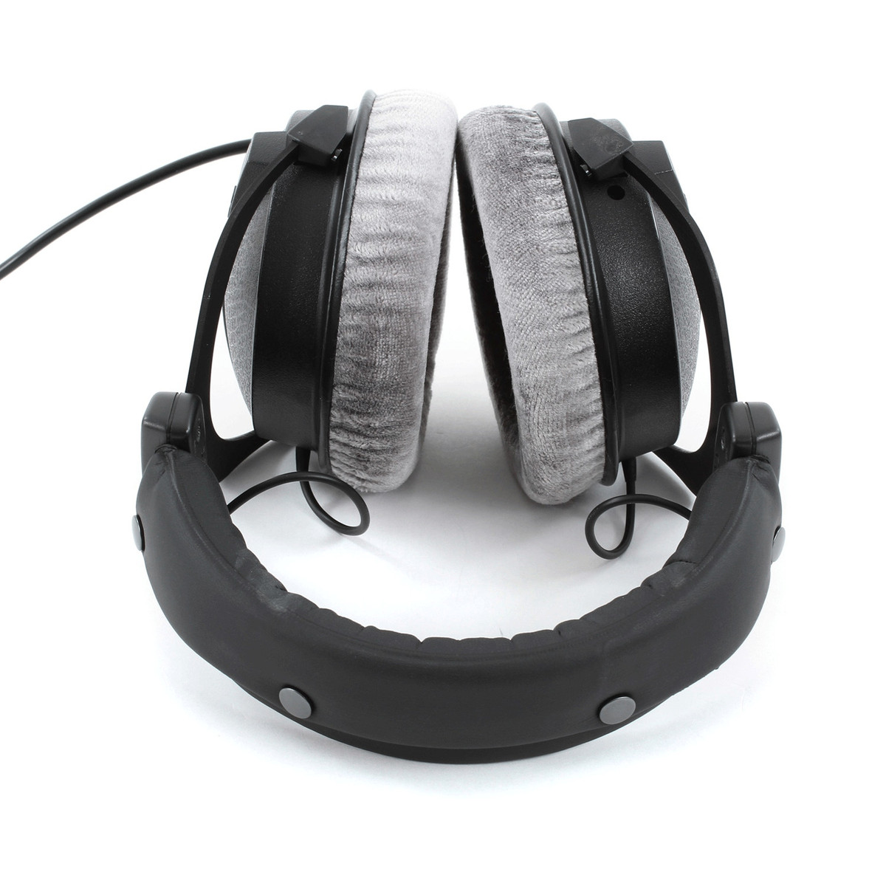

Beyerdynamic DT 770 Pro vs DT 990 Pro: Cerrados vs Abiertos (2026)

Los Beyerdynamic DT 770 Pro y DT 990 Pro son legendarios auriculares alemanes que todo productor debate. Seguimiento cerrado vs mezcla abierta. Aislamiento vs escenario sonoro. Refuerzo de graves vs énfasis en agudos. He usado e investigado profundamente ambos — he mezclado álbumes enteros en ellos. Aquí está la comparación definitiva para que dejes de preguntarte y empieces a comprar.
DT 770 Pro: El Rey del Seguimiento

DT 990 Pro: El Maestro de la Mezcla

El Problema de Amplificador Que No Sabías
Veredicto: ¿Cuál Deberías Comprar?
Conclusión
El DT 770 Pro y el DT 990 Pro son el Batman y Superman de los auriculares de estudio — diferentes pero ambos esenciales. El DT 770 Pro te da aislamiento para seguimiento y una respuesta de graves satisfactoria. El DT 990 Pro te recompensa con un escenario sonoro impresionante para mezclar. A sus precios ($159-$169), ningún otro auricular ofrece esta combinación de calidad de construcción alemana, comodidad y rendimiento. La única respuesta incorrecta es no comprar ninguno.